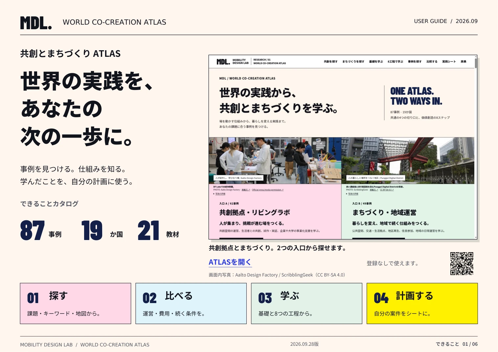
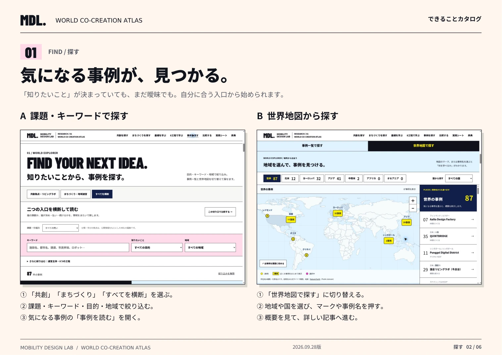
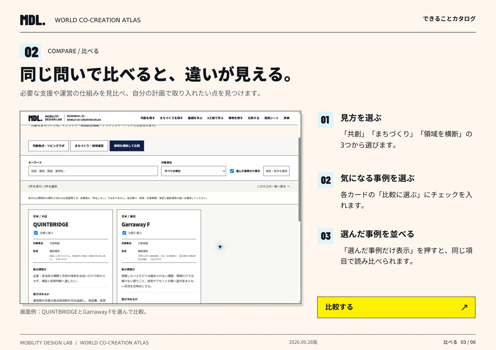
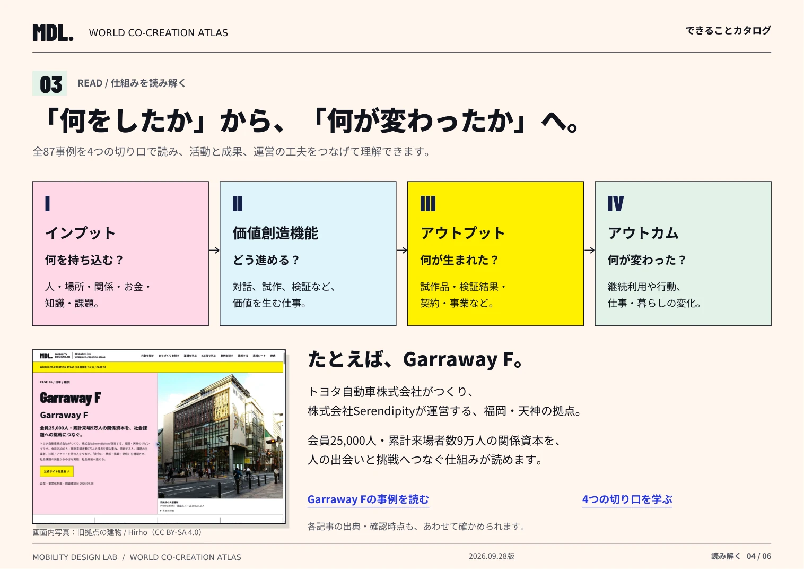
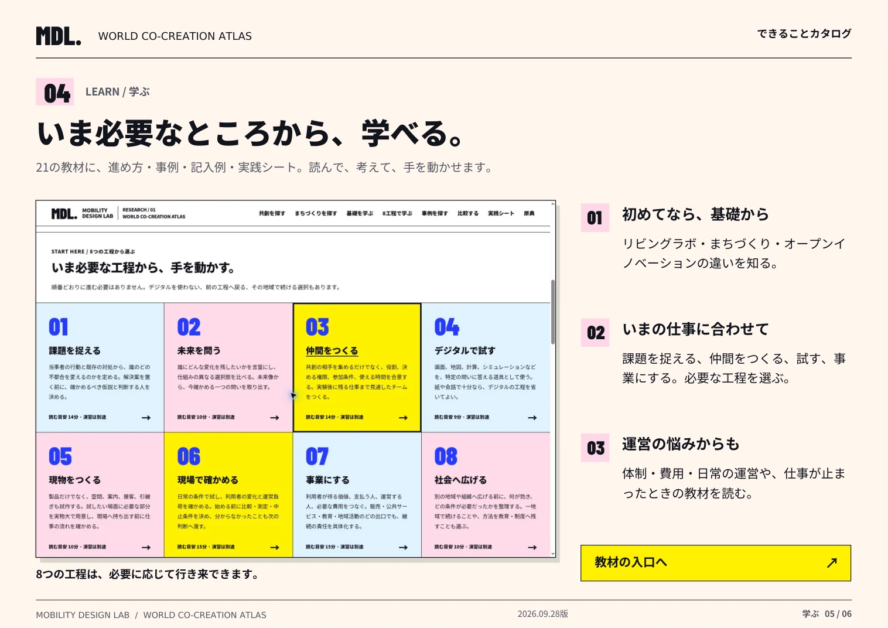
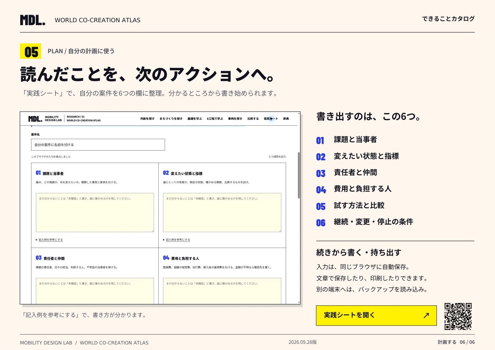

USER GUIDE / できることカタログ
このATLASで、
できること。
探す・比べる・学ぶ・計画する。
実際の画面で、使い方をご紹介します。

02 / 探す
気になる事例が、見つかる。
知りたい課題からも、気になる国や地域からも探せます。
- 「共創」「まちづくり」「すべてを横断」から入口を選ぶ。
- 課題・キーワード・目的・地域で絞り込む。
- 「世界地図で探す」に切り替えると、場所から事例を選べます。

03 / 比べる
同じ問いで、違いが見える。
運営・費用・必要な支援を見比べ、自分の計画に取り入れたい点を見つけます。
- 「共創」「まちづくり」「領域を横断」から見方を選ぶ。
- 気になるカードの「比較に選ぶ」にチェック。
- 「選んだ事例だけ表示」で、同じ項目を読み比べる。

04 / 読み解く
何をしたか、何が変わったか。
掲載事例を、インプット・価値創造機能・アウトプット・アウトカムの4つの切り口で読めます。
- 人・場所・関係・お金など、持ち込んだ資源を知る。
- 対話・試作・検証と、そこから生まれたものを読む。
- 継続利用や暮らしの変化を、出典・確認時点とあわせて確かめる。

05 / 学ぶ
必要なところから、学べる。
21の教材で、基礎・進め方・記入例を確認。必要な工程を行き来しながら学べます。
- 初めてなら、リビングラボ・まちづくり・オープンイノベーションの基礎から。
- 課題を捉える、仲間をつくる、試す、事業にする。いまの仕事に合う工程へ。
- 体制・費用・日常の運営や、仕事が止まったときの教材も。

06 / 計画する
読んだことを、自分の計画へ。
「実践シート」で、自分の案件を6つの欄に整理します。分かるところから書き始められます。
- 課題・指標・仲間・費用・試す方法・継続条件を書き出す。
- 入力は同じブラウザに自動保存。文章での保存や印刷もできます。
- 別の端末へは「全シートをバックアップ」と「バックアップを読み込む」を使います。

YOUR NEXT STEP